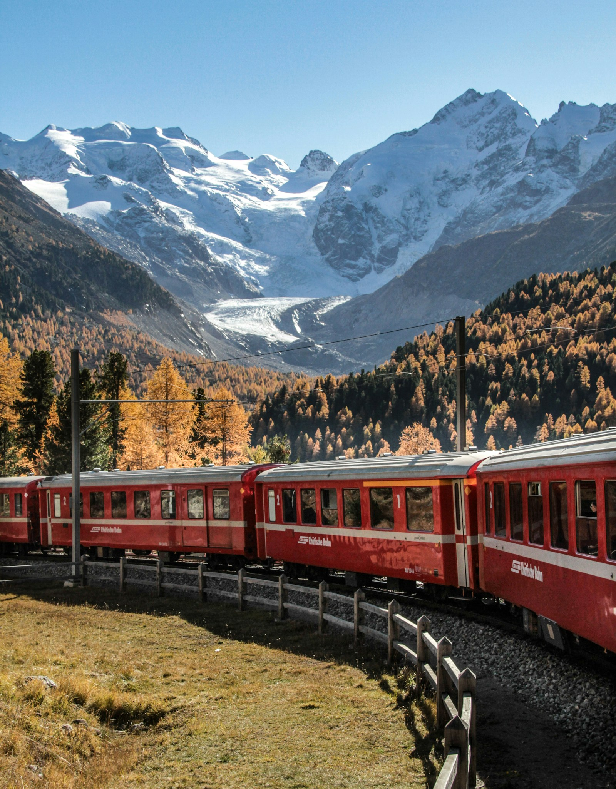

Transportation Guide
Overview
Switzerland has one of the most efficient and well-connected public transportation systems in the world. From trains and trams to cable cars and mountain railways, getting around Switzerland is a pleasure in itself.
Swiss Travel Pass
The Swiss Travel Pass offers unlimited travel on the Swiss Travel System network, including trains, buses, and boats. It also provides free entry to over 500 museums and 50% discount on most mountain railways.
| Pass Duration | 2nd Class (CHF) | 1st Class (CHF) | 2nd Class (₹) | 1st Class (₹) |
|---|---|---|---|---|
| 3 consecutive days | CHF 254 | CHF 405 | ₹24,130 | ₹38,475 |
| 4 consecutive days | CHF 309 | CHF 495 | ₹29,355 | ₹47,025 |
| 6 consecutive days | CHF 399 | CHF 639 | ₹37,905 | ₹60,705 |
| 8 consecutive days | CHF 439 | CHF 703 | ₹41,705 | ₹66,785 |
| 15 consecutive days | CHF 499 | CHF 799 | ₹47,405 | ₹75,905 |

Popular Scenic Train Routes
| Route | Duration | Highlights |
|---|---|---|
| Glacier Express (Zermatt - St. Moritz) | 8 hours | 291 bridges, 91 tunnels, Alpine scenery |
| Jungfrau Railway (Kleine Scheidegg - Jungfraujoch) | 1.5 hours | Europe's highest railway station (3,454m) |
| Golden Pass Line (Montreux - Lucerne) | 5 hours | Lake Geneva, Alpine foothills, medieval towns |
| Bernina Express (Chur - Tirano, Italy) | 4 hours | UNESCO World Heritage route, 55 tunnels, 196 bridges |
| Gotthard Panorama Express (Lucerne - Lugano) | 5.5 hours | Lake Lucerne cruise, Gotthard mountain crossing |
Trams and Buses
Major Swiss cities have excellent tram and bus networks. Zurich, Basel, Bern, and Geneva have extensive tram systems. Tickets can be purchased at machines, online, or through mobile apps like SBB Mobile.
Cable Cars and Mountain Railways
Switzerland has over 600 cable cars and mountain railways that provide access to Alpine peaks and ski resorts. Popular ones include Jungfraubahn, Gornergrat Railway, Pilatus Railway, and Schilthorn Cable Car.
Transportation Cost Comparison
| Mode | Cost (CHF) | Best For |
|---|---|---|
| Swiss Travel Pass (8-day) | CHF 439 | Unlimited travel + museum access |
| Single City Tram Ticket | CHF 2.50 - 4 | Short local journeys |
| Train (Zurich to Lucerne) | CHF 25 | Intercity travel |
| Taxi (within city, 5km) | CHF 20 - 35 | Short door-to-door trips |
| Rental Car (per day) | CHF 50 - 100 | Exploring rural areas |
| Mountain Railway (return) | CHF 50 - 150 | Alpine excursions |
- Always validate your ticket before boarding trains, trams, and buses.
- Use the SBB Mobile app for real-time schedules and ticket purchases.
- First class is worth the upgrade on scenic routes for panoramic views.
- Book scenic train seats in advance during peak season.
- Consider the Half-Fare Card (CHF 120 for one month) if traveling extensively.